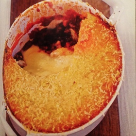

1lb potatoes
1/2 cup of half and half
2 oz of butter + 1 tbsp
4 egg yolk
2 oz of grated cheese
1/2 lb ground meat
1 tsp olive oil
1 tsp sugar
3 shallot
4 crushed garlic cloves
1 tsp tomato paste
3/4 cup red wine
1/2 lb canned diced tomato
1 tsp xeres vinegar
1 tsp thyme
1 tsp rosemary
1/2 tsp chili flakes
1 tsp coriander
1 pinch coriander
1 pinch coriander seeds crushed
1 mixed salad (pour accompagner)
Cook potatoes in salted water. Drain them and put them back on heat for complete evaporation. Then mash them.
Boil the cream and 2 oz of butter in a saucepan. Pour the content on the potatoes and stir stiffly. Add the egg yolks, the cheese, salt and pepper if necessary and let rest.
Saute the meat at high heat with a tsp of butter and a tsp of oil. Once the meat is brown, reduce the heat, add sugar, the shallot and garlic, cover and let slowly melt. Add then the tomato paste and the various spices, stir well and let cook uncovered for around 4 min. Add then the red wine and it almost entirely evaporate, then add the diced tomatoes and cook at high heat. Check the seasoning, if necessary add pepper/salt/vinegar.
Pre-heat the oven at 360F. Put the meat in a oven-plate, cover it with the mashed potatoes and put grated cheese on the top. Let cook until the puree is well browned.
Serve with a salad.